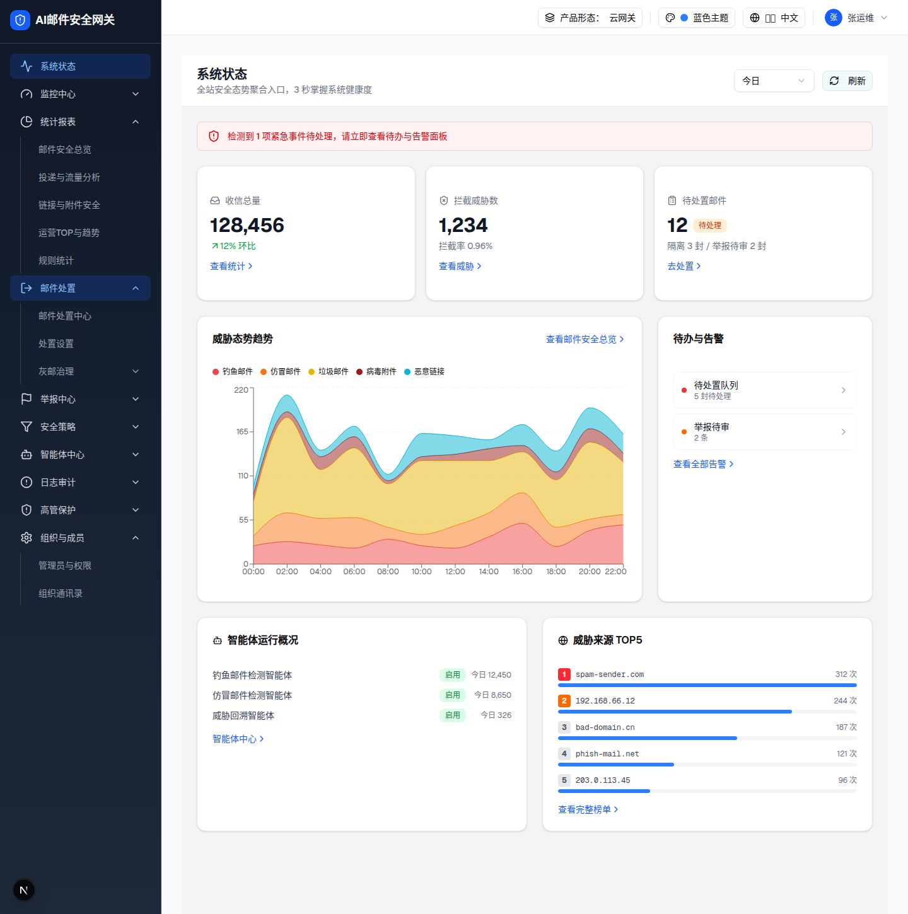

| 所属规格 | spec §0.2 形态×视角矩阵 · §9 数据口径与权限 |
| 主文件 | system-status/index.html |
| 触发路径 | 顶栏「产品形态」切换器 → 管理视角选「租户管理员」（demo 也支持 URL 参数 ?profile=cloud&viewer=tenant，本验证即用此方式） |
| 判定机制 | resolve("monitor-infrastructure").visible === false（该 feature 定义 scope:"platform", tenantAccess:"hidden"）→ showInfra=false；告警按 scope==="tenant" 过滤 |

xl:grid-cols-3 收敛无空缺）；③ 告警仅 2 项（待处置队列 / 举报待审）；④ 底部仅智能体 + TOP5 两卡（lg:grid-cols-2），系统与服务健康卡隐藏。侧边栏亦同源裁剪（出现租户菜单如「处置设置/灰邮治理」，隐藏平台管理菜单）。| 区块 | 平台视角 | 租户视角 | 实测值 |
|---|---|---|---|
| 健康条文案 | 检测到 2 项紧急事件… | 检测到 1 项紧急事件… | ✅ danger 仅剩「待处置队列」 |
| KPI 栅格 | xl:grid-cols-4，4 卡 | xl:grid-cols-3，3 卡 | ✅ class 与子节点数实测 |
| 系统在线节点卡 | 渲染 | 不渲染 | ✅ cards 列表无该卡 |
| 待办与告警 | 5 项 | 2 项（待处置队列 5 封待处理 / 举报待审 2 条） | ✅ innerText 实测 |
| 底部概览栅格 | lg:grid-cols-3，3 卡 | lg:grid-cols-2，2 卡（智能体 + TOP5） | ✅ |
| 系统与服务健康卡 | 渲染 | 不渲染 | ✅ |
| 智能体运行概况 | 渲染 | 渲染（仅按 capabilities.ai，见主文件差异 D7） | ✅ |
预览可操作：hover 列表项浅灰背景；点击显示 demo 跳转路由。平台级三项（检测引擎离线 / 许可证到期 / 规则库版本）在此视角不渲染。
| 比对项 | demo 实际 DOM | 提取的 HTML | 一致 |
|---|---|---|---|
| 列表项数 | 2 个 button（均可点击，带 ChevronRight） | 2 | ✅ |
| 级别圆点 | bg-red-500（待处置队列）/ bg-orange-500（举报待审） | 一致 | ✅ |
| 平台级三项 | 未渲染（scope 过滤） | 未包含 | ✅ |
| 底部链接 | 查看全部告警 ›（仍渲染） | 一致 | ✅ |